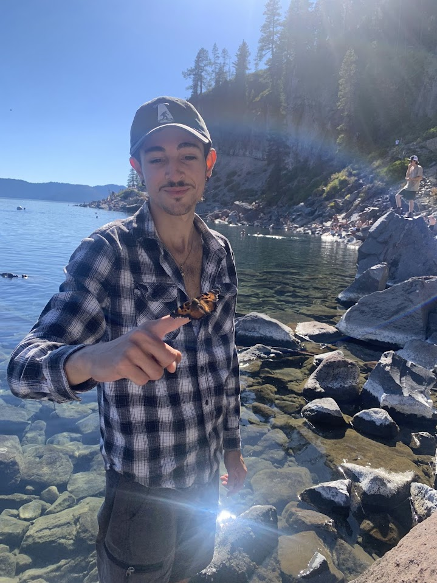
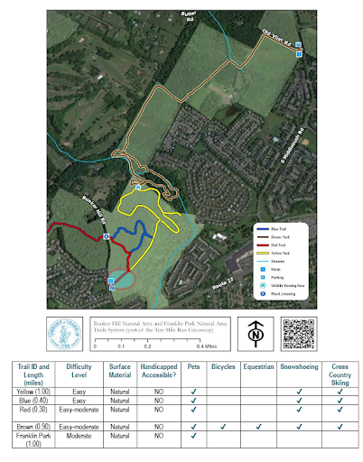
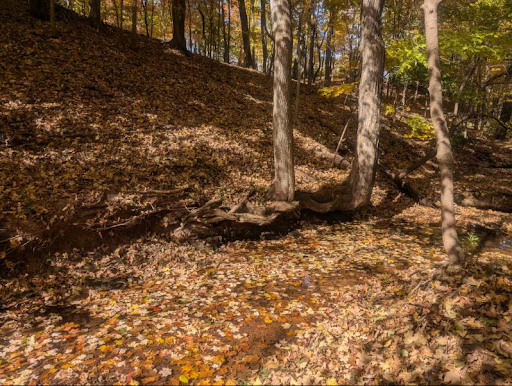
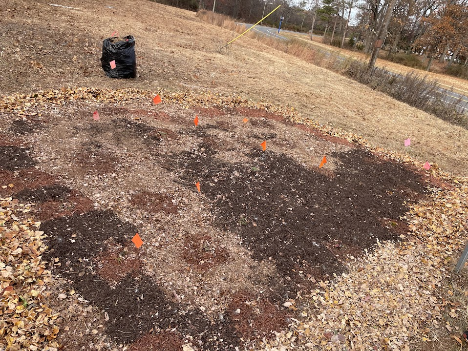
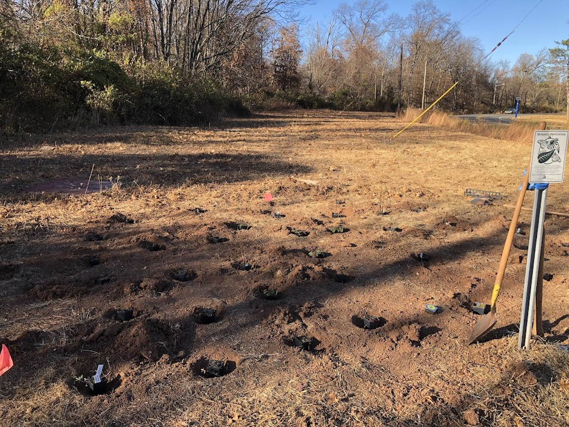

GIS Analyst
GIS Analyst

Hi! My name is Michael Morosco. I am a graduate of Rutgers University who majored in Ecology, Evolution, and Natural Resources. I went to Rutgers with a strong interest in the natural world and the science behind it. During my time at Rutgers, I developed an enjoyment in geomatics work and decided to get certified. I am proficient in ArcGIS and QGIS and am comfortable navigating these platforms' interfaces and understand how to effectively apply a wide range of their geospatial tools and workflows to real-world problems.

Updated five park trail maps and information

Analyzed streams in the Rutgers ecological preserve, quantifying bank health, water quality, streambottoms, cover, and organisms.

